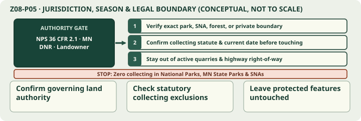

Z08-P05 · Rocks, minerals and materials · New manuscript
Public-Land Rock and Mineral Collecting Restrictions
Verify land ownership and collecting statutes before removing any rock, mineral, soil, or fossil specimen from a site.
When it applies · Federal parks, Minnesota State Parks, Scientific and Natural Areas, public forests, and private land.
Equipment · Land-ownership map, posted boundary notices, current agency rules.

Actions
- Confirm exact land jurisdiction before picking up specimens because National Parks under 36 CFR 2.1, Minnesota State Parks, and SNAs prohibit removing rocks, soil, or fossils.[R08, R09, R10]
- Obtain explicit landowner permission before collecting on private property and stay clear of active quarries, steep roadcuts, and highway traffic zones.[R11]
- Record the governing agency, rule source, and check date whenever limited public-land rock collecting is permitted under local guidelines.[R08, R11]
Failure recognition · Assuming shoreline cobbles or roadside gravel are free to take results in unlawful resource removal, trespass, or severe traffic and quarry hazards.[R08, R09, R11]
Verify · Jurisdiction, collecting permission, and physical site safety are documented before any specimen leaves the ground.[R08, R11]
Stop or change course · Stop immediately and leave every stone in place when land boundaries are uncertain or signs indicate a park, monument, SNA, or tribal preserve.[R08, R09, R10]
Evidence and editorial notes
- R08 · National Park Service / eCFR · 36 CFR 2.1 Preservation of Natural, Cultural and Archeological Resources (Current CFR)
- Section: 36 CFR 2.1 natural resource collecting prohibitions · Conditions: National Parks, Monuments, and federal recreation areas
Support: Collecting rocks, minerals, fossils, wood, or natural specimens is prohibited on National Park System lands unless specifically authorized.
Limitations: Rules vary across USFS, BLM, state, tribal, county, and private lands; check the governing land manager before taking any sample. · Conflicting evidence: None noted.
Editorial note: Prevents unlawful federal resource extraction. · Specialist reviewer: Public-lands resource manager
Primary source · checked 2026-11-25 - R09 · Minnesota DNR · Minnesota State Park Rules and Resource Collecting Restrictions (Current web edition)
- Section: State park natural-feature protection · Conditions: Minnesota State Parks and Recreation Areas
Support: Removing rocks, minerals, soil, or live vegetation from Minnesota State Parks is prohibited to protect natural resources.
Limitations: Verify jurisdiction boundaries before picking up specimens even along shorelines or trails. · Conflicting evidence: None noted.
Editorial note: Bounds state-park material collection. · Specialist reviewer: Minnesota DNR resource manager
Primary source · checked 2026-11-25 - R10 · Minnesota DNR · Scientific and Natural Areas Visitor Rules and Prohibitions (Current web edition)
- Section: No collecting plants, animals, rocks or fossils; Foraging · Conditions: Minnesota Scientific and Natural Areas, subject to the actual site rules
Support: Leave natural features in place unless the site lists an applicable exception or there is a valid authorization.
Limitations: Certain named sites have limited berry or mushroom exceptions. They do not extend to rocks or general digging. · Conflicting evidence: Conditions are recorded in the A03 audit.
Editorial note: Enforces SNA zero-collection boundaries. · Specialist reviewer: Minnesota DNR SNA manager
Primary source · checked 2026-11-25 - R11 · Minnesota DNR · Lake Superior Agate and Public-Land Rock Collecting Guidelines (Current web edition)
- Section: Lawful public-land gravel-pit and road-cut rock collecting limits · Conditions: Unrestricted public gravel areas and authorized private land
Support: Where lawful, rock hounding requires landowner permission on private land and compliance with local safety and collecting limits.
Limitations: Private property, active quarries, road right-of-way hazards, and tribal lands carry separate prohibitions and trespass penalties. · Conflicting evidence: None noted.
Editorial note: Clarifies lawful vs prohibited rock collection. · Specialist reviewer: Public-lands and legal reviewer
Primary source · checked 2026-11-25
Source lineage · New manuscript (Z08 P16 collection law) · Classification · New manuscript.